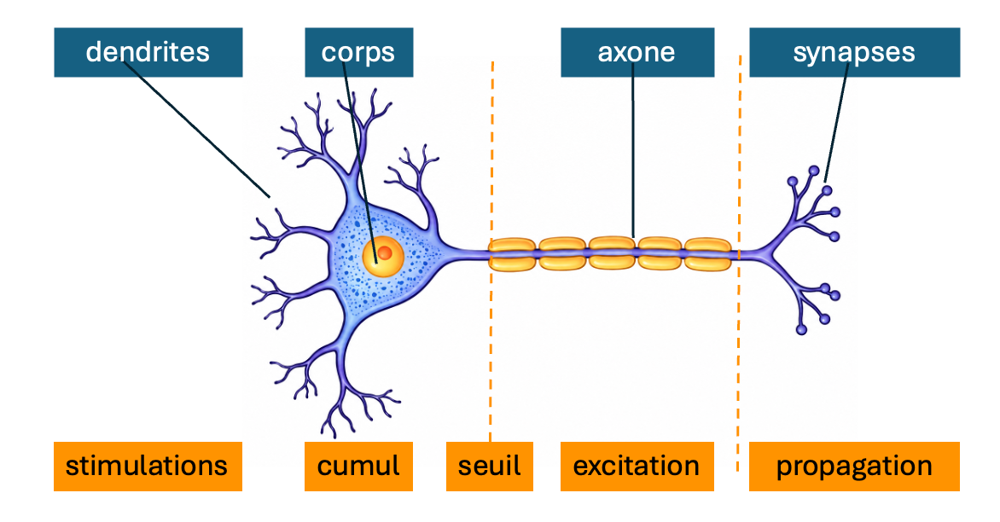
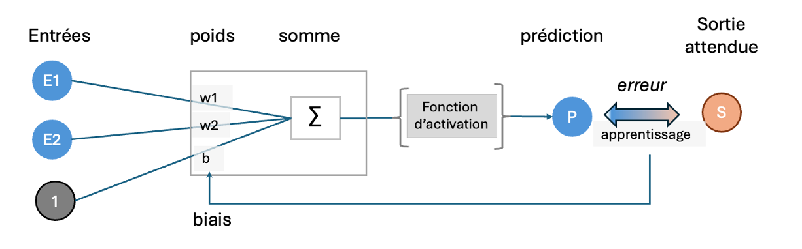
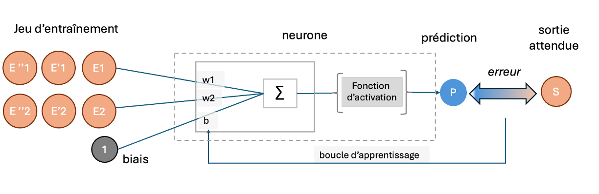
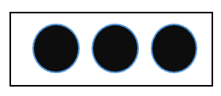
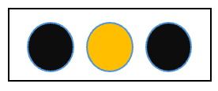
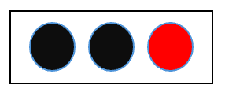
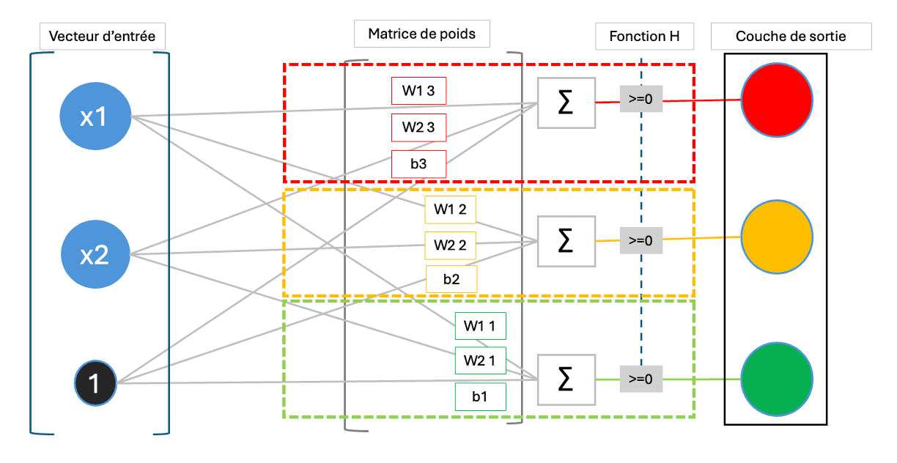

Comment marche un neurone
Le neurone biologique

Si le cumul des stimulations reçues franchit son seuil
d'excitation, le neurone active son axone.
Si d'autres neurones sont connectés en aval à ses
synapses, ils reçoiventl'information.
Il se forme alors un réseau de neurones biologiques, capable de
traiter l'information et de prendre des décisions.
Le neurone artificiel : un calcul similaire au neurone biologique
Un neurone artificiel reproduit la logique d'un neurone biologique par des calculs simples.

Schéma d'un neurone à deux entrées
Les valeurs des entrées sont multipliées par des
poids
qui codent l'importance de chaque entrée dans la décision
commune.
Les résultats sont cumulées et on ajoute un
biais qui décale le résultat avant
activation.
En deux dimensions, c'est l'équation d'une droite dans un
plan x1, x2 qui est éventuellement décalée par
rapport à l'origine par le biais.
Une fonction d'activation décide si
le neurone s'active ou non et transforme le cumul pour produire
un résultat.
Entraînement d'un neurone artificiel

On présente au neurone jeu d'exemples dont on connaît la sortie attendue.
Le neurone calcule sa prédiction et on compare le résultat à la
sortie attendue en mesurant l' erreur.
Laboucle d'apprentissage consiste à
ajuster les poids (et/ou le biais) itérativement pour réduire
l'erreur pour tous les échantillons d'entraînement.
Une fois l'apprentissage terminé, le neurone est capable de
généraliser et de prédire correctement (au mieux) les sorties
pour de nouvelles entrées inconnues.
L'ensemble des poids et des biais constitue les
paramètres du neurone artificiel.
L'ensemble des paramètres d'un réseau de neurones est ce qu'on
appelle le modèle du réseau.
Illustration pratique
Un exemple simple : le feu tricolore
On va créer et entrainer un modèle qui allume chaque feu
individuellement selon la valeur d'un compteur.
C'est ce qu'on appelle un modèle
classifieur , un modèle qui
prédit une seule classe parmi plusieurs classes possibles.
Dans cette catégorie, on va trouver les classifieurs d'images, de sons, de textes, etc.
Le neurone ancêtre: le perceptron
Le perceptron est le premier et le plus simple des
neurones artificiels, mais il est suffisant pour en illustrer le
fonctionnement.
La
fonction d'activation d'un
perceptron, nommée H du nom de son inventeur
Oliver Heaviside, est binaire:
- Si le résultat du calcul est supérieur ou égal à 0, la
prédiction est 1, sinon elle reste à 0.
Les données d'entraînement du feu tricolore
| Compteur : binaire | sortie attendue | résultat |
|---|---|---|
| 0 : 00 | 000 |
 |
| 1 : 01 | 100 |

|
| 2 : 10 | 010 |
 |
| 3 : 11 | 001 |
 |
Un réseau monocouche avec trois neurones
Un neurone n'a qu'une sortie. Il faut donc un
réseau de 3 neurones, un pour le
vert, un pour l'orange et un pour le rouge.
Ce réseau a un
vecteur d'entrée de dimension 3 ( 2 entrées + un biais) et
un vecteur de sortie de dimension 3 (les feux).
Ce réseau a 6 poids w et 3 biais b
, sa matrice est alors de
dimension 3×3 ,
c'est un réseau à 9
paramètres.

Réseau des 3 neurones perceptrons avec leurs paramètres
individuels.
La couche de sortie doit allumer un seul feu à la fois selon
la valeur du compteur binaire.
Le jeu
d'entraînement est de 4 cas (compteur) par 3 neurones= 12 tests.
L'échelle des paramètres : de dix à mille milliards 1012
Notre réseau monocouche a moins de dix paramètres et ne peut pas
gérer des situations plus complexes, mais il est suffisant pour
illustrer le fonctionnement d'un réseau de neurones.
Les réseaux de neurones profonds pour la reconnaissance
d'images ont des millions (106) de paramètres et des
dizaines de couches.
Les grands
LLM (Large Language Model) ont
des milliers de milliards (1012) avec des centaines
de couches.
Le fonctionnement de base reste le même.
Le calcul matriciel et les GPU
On effectue des milliards d'opérations mathématiques en
multipliant une matrice de poids
par des vecteurs d'entrées.
C'est typiquement le domaine de calcul des
GPU(Graphic Process Unit) d'où la
course à ces équipements et le gigantisme des centres de calcul
pour l'entrainement des réseaux de neurones profonds.
Expérimentez ce réseau
On a créé une interface visuelle pour changer les paramètres et
voir le réseau de neurones des feux tricolores en action.
Vous pouvez jouer le rôle de l'entraineur et ajuster
vous-même les poids et les seuils jusqu'à obtenir un succès.
Jouez avec le réseau de neurones des feux tricolores
Note: L'activation H d'un Perceptron est: (somme pondérée >= seuil) ou encore (somme pondérée - seuil >= 0)D'où biais = -seuil dans l'interface.